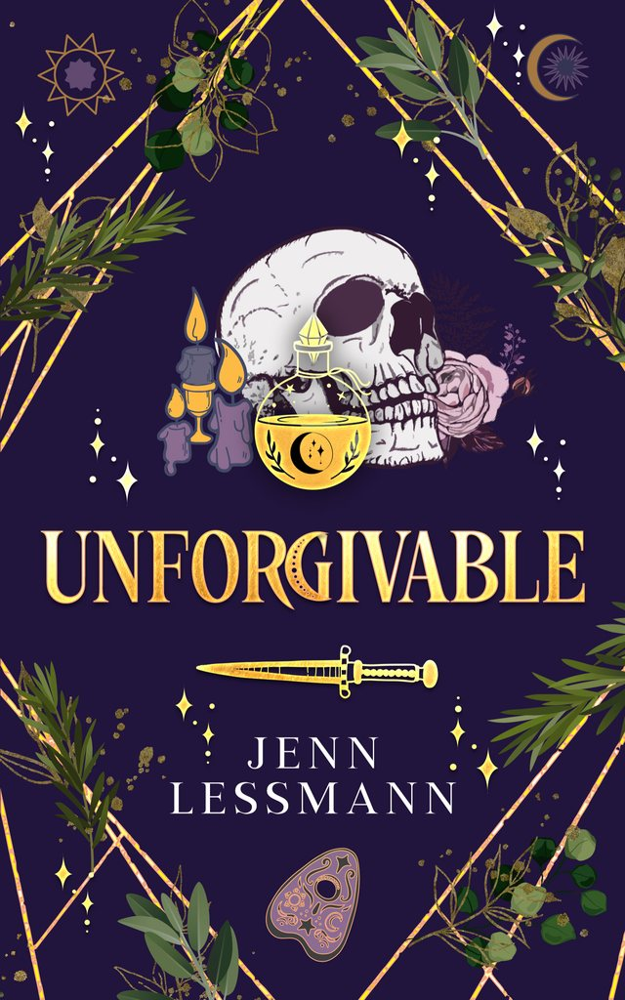
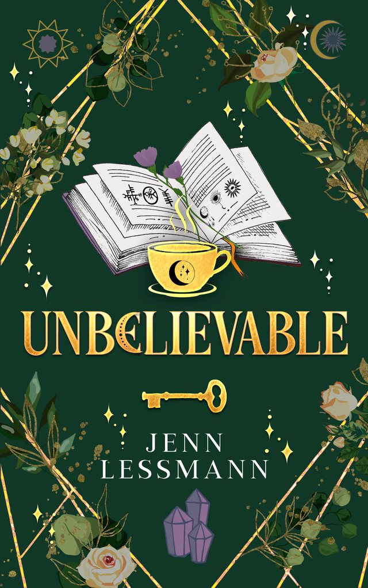
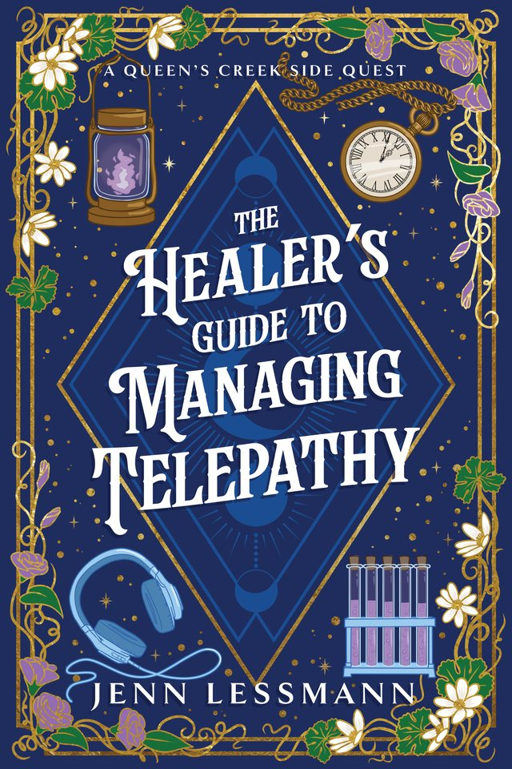
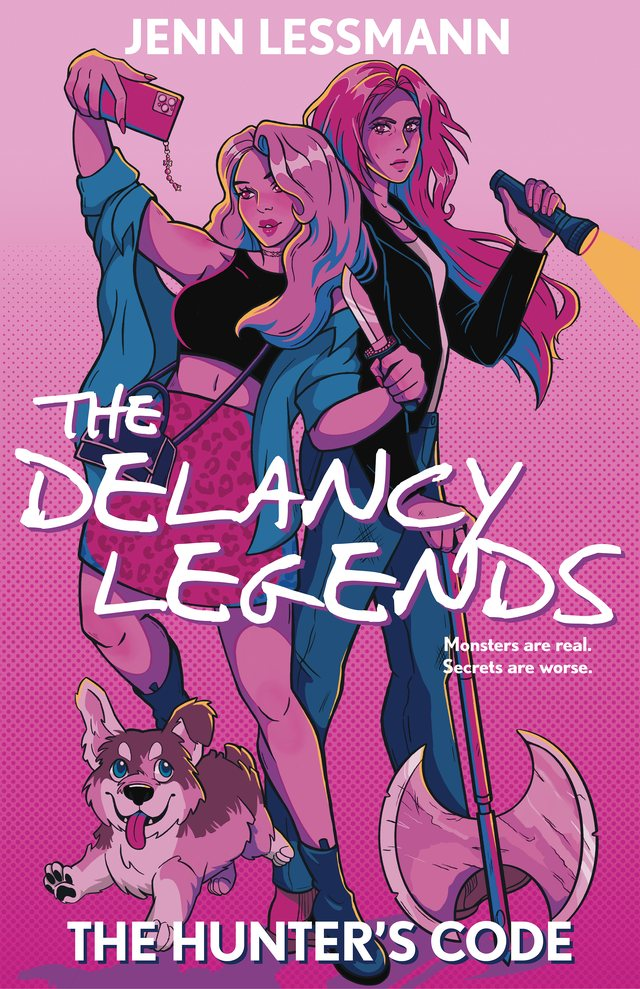

Cate Corey's Unmagical Life
More snark, less dark. Then a companion novel, and a new series for readers who miss the Scoobies.

Book two
Unforgivable
How do you protect yourself from someone else's fear?
When Cate Corey returns to college after spending Spring Break in her enchanted hometown, she's tasked with tracking down a wayward witch. Finding the girl is easy. The real trick will be stopping her from revealing their secrets to the world.

Book three
Unbelievable
What good is saving everyone if you lose yourself in the process?
College senior (and undercover witch) Cate Corey might be the world's only hope when a casual book club discovers a real grimoire. With the help of a vegan vampire, she must find a way to return the book to the library's restricted section, before it's too late.

A Queen's Creek side quest
The Healer's Guide to Managing Telepathy
A cozy, time-bending romance about trust, magic, and the lengths we'll go to for love.
An empath burned out from carrying everyone else's emotions. A telepath whose intrusive thoughts come from other people's minds. Their connection is inconvenient, ill-timed, and unavoidable. It's also their only chance.
Best read as a companion novel after the first three.

New, October 2026
The Delancy Legends: The Hunter's Code
Monsters are real. Secrets are worse.
On her YouTube channel, Dee Delancy tells monster stories while doing her makeup. Her subscribers love it. They have no idea how close they are to the truth. A YA urban fantasy for anyone who still hasn't forgiven Supernatural for Ellen and Jo Harvelle.
The Unmagical Book Box
More Snark, Less Dark: a Practical Magic x Veronica Mars cozy witchy mystery collector's edition, with custom illustrations and foiled tarot cards. It ran on Kickstarter through October 2026.
Find her in person
Jenn sells at book festivals and witch markets. This is where the next ones are.
- 21 Nov 2026Wine and Whimsy Renaissance Faire
- 4 to 6 Jun 2027Imaginarium Book FestivalWashington, DC
- 24 Oct 2026Crozet Book Fest
- 3 Oct 2026Fredericksburg Independent Book Festival
About Jenn
Jenn Lessmann writes more snark, less dark urban cozies and witchy mysteries.
A former barista, stage manager, and high school English teacher with advanced degrees from impressive colleges, she continues to drink excessive amounts of caffeine, stay up later than is absolutely necessary, and read three or four books at a time.
Questions, comments, snide remarks? She suggests a summoning circle. Chocolate, caffeine, fan art and witchy crafts help.